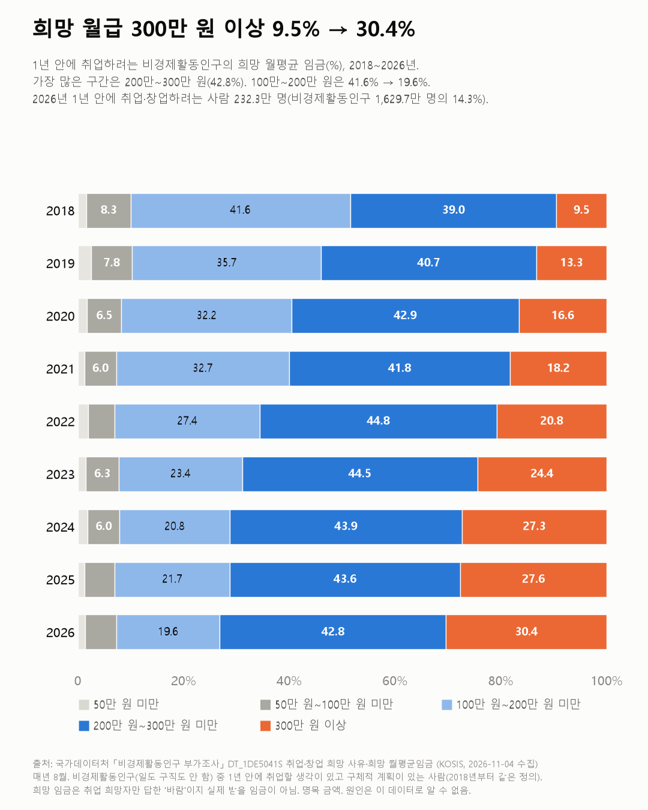
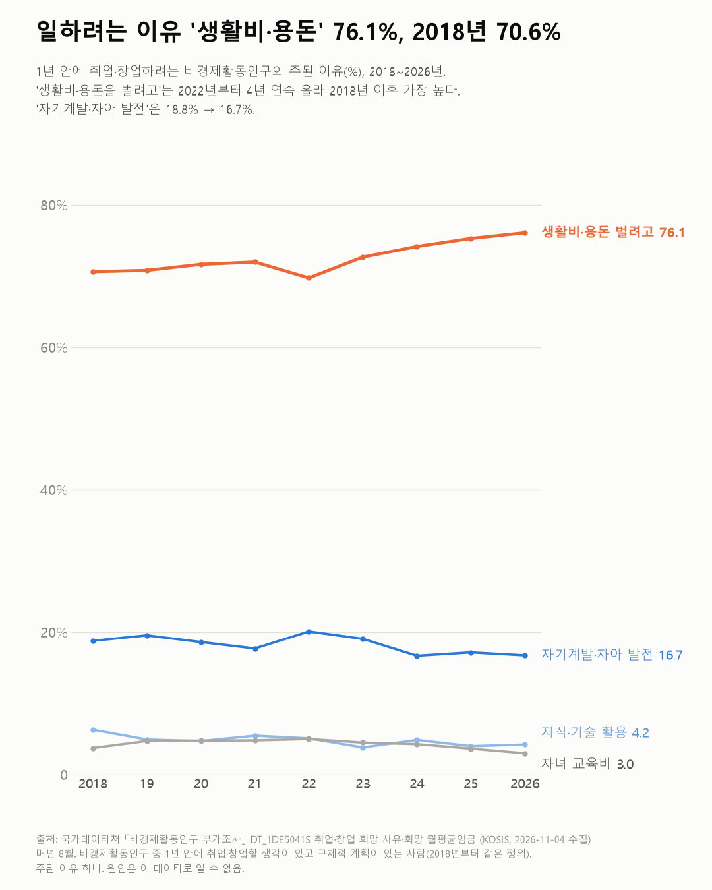

다시 일하려는 사람, 열에 셋은 월 300만 원 이상을 바라요
바라는 월급이 높아진 건 실제 월급이 오른 것과 같이 봐야 해요. 같은 기간 일하는 사람의 월급도 255.8만 원에서 330.5만 원으로 29.2% 올랐어요.

3줄 요약
- 지금은 일도 구직도 안 하지만 1년 안에 일하려는 사람 중, 월 300만 원 이상을 바라는 비율은 2018년 9.5%에서 2026년 30.4%가 됐어요.
- 2026년 가장 많은 사람이 바란 월급은 200만~300만 원(42.8%)이에요.
- 일하려는 주된 이유는 '생활비·용돈을 벌려고'가 76.1%로, 2018년 이후 가장 높아요.
같은 기간 실제로 일하는 임금근로자의 월평균 임금(매년 8월)을 옆에 놓아 봤어요. 255.8만 원에서 330.5만 원으로, 29.2% 올랐더라고요. 바라는 월급이 고정된 선을 넘는 사람이 늘어난 데엔 이렇게 임금 수준 자체가 오른 영향이 섞여 있어요(정규·비정규 임금 글의 표).
그 선이 300만 원이에요. 300만 원 이상을 바라는 사람은 2018년 9.5%에서 2026년 30.4%가 됐어요. 100만~200만 원은 41.6%에서 19.6%로 줄었어요. 가장 많은 구간은 여전히 200만~300만 원(42.8%)이에요.
2026년에 1년 안에 취업·창업하려는 사람은 232.3만 명이에요. 비경제활동인구(1,629.7만 명)의 14.3%예요.
왜 일하려 할까요? '생활비·용돈을 벌려고'가 76.1%예요. 2022년(69.7%)부터 4년 연속 올라 2018년 이후 가장 높아요. '자기계발·자아 발전'은 18.8%에서 16.7%가 됐어요.

바라는 월급과 실제로 받게 된 월급은 얼마나 가까웠을까요? 1년 뒤 이 사람들의 첫 월급 명세서가 궁금해져요.
이 숫자는 어디서 왔나요
출처
어떻게 셌나요
- 국가데이터처 「경제활동인구조사」의 8월 비경제활동인구 부가조사예요. 비경제활동인구는 일도 하지 않고 구직도 하지 않는 15세 이상이에요.
- 2018년부터 정의가 바뀌었어요. 1년 안에 취업·창업하려는 사람 가운데 '구체적 활동계획이 있는 사람'만 조사하고, 희망 임금은 취업 희망자(창업 희망자 제외)만 답해요. 그래서 2018년부터만 썼어요.
- 취업·창업 희망자 비율은 희망자 수를 비경제활동인구 전체로 나눈 값이에요.
- 희망 임금은 '바람'이고, 실제 받을 임금과는 달라요. 명목 금액이라 그동안 오른 임금·물가 수준이 섞여 있어요.
새 글 나오면 받아 보기
피드 리더 앱에 이 사이트 주소를 한 번 넣어 두면, 새 글이 올라올 때 앱에 떠요. 가입이나 메일 주소는 필요 없어요.
받는 법 보기
- 피드 리더 앱을 하나 골라요. 새 글을 모아 보여 주는 앱이에요. 예를 들면 Feedly나 Inoreader가 있어요. 둘 다 무료고 웹·휴대폰에서 써요.
- 앱에서 '구독 추가'(+)를 누르고 아래 주소를 붙여 넣어요.
- 끝이에요. 새 글이 올라오면 앱 목록에 떠요.
https://protofu.github.io/opendata-insight/feed.xmlFeedly를 쓴다면 여기를 눌러 바로 추가할 수도 있어요.